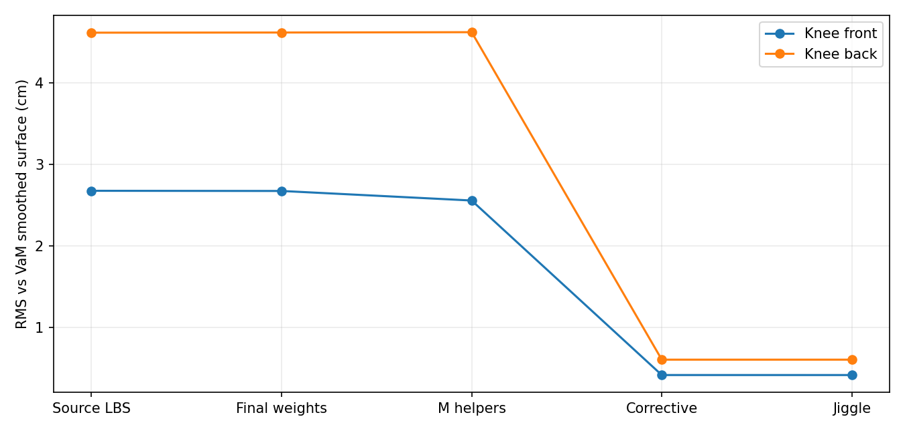
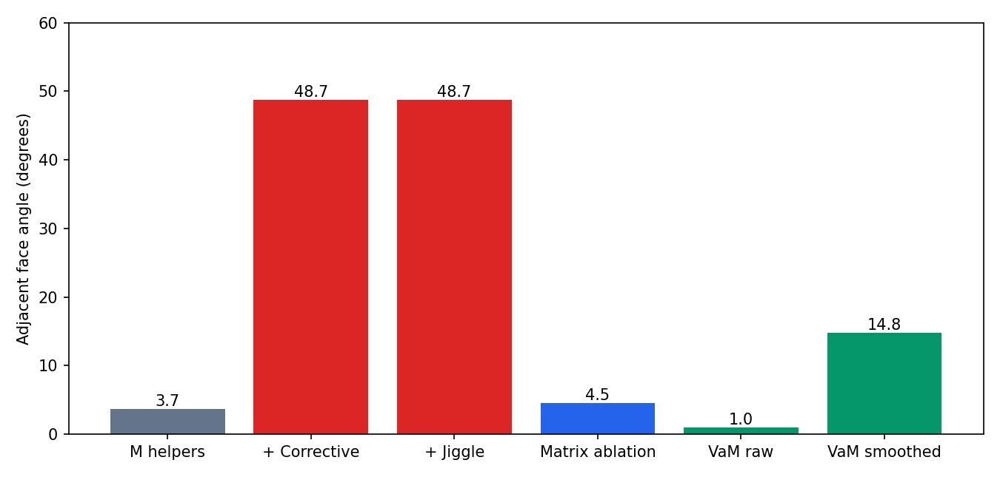

M ↔ VaM · 同动作根因对照
1 · 结论：采用 M，优先修组合算子
继续以 M 为后续方案。M 的剩余膝后硬折，已确认有“肌群辅助骨 × 既有 Corrective”的组合问题。 本轮完成对照和归因，没有偷偷调参数，也没有替换运行资产。
M 保留独立肌群附着、腿部/臀部 Jiggle；Contact 关闭。这里选用用户接受的修复后资产，并复用它已经实跑的 PIE 连续动作及 A1 同帧表面。VaM 本轮实际启动、加载同一 QiMeng-b 外观、重放实际局部矩阵并采样；原插件已恢复并校验。
这些是同动作的稳定关键帧，不是两个引擎同时间步动态物理的视频。 VaM 动态关闭、原版姿态驱动开启；UE 最终帧含 Jiggle，另有静态分层用于隔离它。不能据此评定两套动态阻尼优劣。
VaM 原材质截图（衣物保留，不参与身体数据比较）
2 · 比较成立的范围
15 个关键帧的非眼球骨骼，位置最大差 0.00006179 cm，旋转矩阵最大元素差 0.00000056。眼球受到 VaM 视线驱动，误差单独保存；审计已验证眼球权重不参与全部下半身分析区域。
双腿深跪实际峰值 155°，单腿动作一侧 155°、另一侧约 0°。这是先前明确开启的诊断深屈曲输入，生产关节限位没有修改。比较使用源顶点 ID 与既有 C1.5 区域 Mask，未使用最近邻匹配。
相机位置、方向、FOV 和光源方向已转换到相同身体空间；引擎材质、曝光和光照单位并不等价。VaM 灰模是 Unity 直接绘制真实 smoothedVertsBuffer；UE 图为原有真实人物帧。图像用于检查轮廓，不用亮暗差替代几何误差。
3 · 膝部：差异最早在 LBS，剩余硬折在组合层放大
155°左膝后，对 VaM 平滑输出的 RMS：源 LBS 4.610 cm → 最终权重 4.612 cm → M 静态辅助骨 4.616 cm → Corrective 0.610 cm → Jiggle 0.610 cm。前一轮修复确实补回了大量源形变；剩余问题不能再笼统归为“膝盖没修好”。

在三角形 901/903 这组膝后对应面：M 静态辅助骨时夹角 3.7°，Corrective 后 48.7°，Jiggle 后仍约 48.7°。VaM 原始输出 1.0°，平滑输出 14.8°。其他膝后边也有同类放大，但并非每一条都由一个因素独立造成。

控制变量证据： C 与 M 的 pre-skin Corrective 顶点完全一致（最大差 0）。固定 M 的 Morph、主骨、权重、Bind，仅换掉腿部辅助骨矩阵，同一边回到 4.5°。这是离线 A1 算子消融，不能冒称 UE 修复截图；其原路径重放误差最大 0.0000164 cm。
代码链路：VamKneeCorrectiveBuilder.cpp 在单膝姿态的蒙皮算子下逆变换烘焙；VamLegJiggleProfile.cpp::MusclePath 在运行时改变肌群辅助骨缩放；VamLegSkeletalMeshComponent.cpp::FinalizeBoneTransform 写入最终辅助骨矩阵。相同的 pre-skin delta 经过不同算子，得到不同的 posed delta。完整肌群缩放自身行列式为 1，不代表混合蒙皮后的曲面体积或曲率连续。
4 · 平滑与体型/Morph：必须分开记账
VaM 的实际 useSmoothing=true。155°左膝前 raw→smoothed 的 RMS 0.176 cm，局部最大 0.675 cm；左膝后 RMS 0.118 cm，最大 0.404 cm。UE 源修形主要针对 raw 算子，渲染细分并不自动等于 VaM 的蒙皮后平滑。平滑也不保证每条面间夹角都减小。
膝区静态源输入基本一致：膝后最大差约浮点级，左膝前最大约 0.0063 cm。因此这里的算子归因有可靠基础。
臀腿区没有完全通过输入一致性：左臀腿区域站立 pre-skin RMS 0.408 cm、Max 1.363 cm；VaM 从站立到深跪的输入又变化 RMS 0.675 cm、Max 1.211 cm。深跪时 !Bend Fix 等多个隐藏 Morph 同时变化；不能把组合变化全归给 Bend Fix，也不能把这里的最终差值全归为 M 绑骨错误。这部分先作为输入/驱动差异列账，再做单 Morph 消融。
5 · 最终表面的局部差值
以下是 155° M 最终 A1 表面对 VaM smoothed buffer 的位置差，单位 cm。臀腿行包含上述输入差异，不是纯蒙皮误差或人体正确性评分。
| 区域 | RMS | P95 | Max | 最差源顶点 |
|---|---|---|---|---|
| 左膝前 | 0.421 | 0.796 | 1.081 | 8467 |
| 右膝前 | 0.422 | 0.794 | 1.083 | 19138 |
| 左膝后 | 0.610 | 1.224 | 1.477 | 4109 |
| 右膝后 | 0.618 | 1.231 | 1.477 | 14885 |
| 左臀腿过渡 | 0.949 | 1.867 | 1.972 | 22229 |
| 右臀腿过渡 | 0.877 | 1.694 | 1.972 | 22229 |
双腿动作和独立单腿动作都复现了同一组合问题。M 的源 ID 接缝审计沿用先前真实帧，重复点位置差为 0；这类膝后问题主要是曲率折线，不是顶点裂开。没有把相邻法线相反直接当作四面体翻转。
6 · 下一步与可追溯证据
- 保留 M 肌群附着与 Jiggle，优先让膝部 Corrective 与 当前 M 最终蒙皮算子一致；评估当前算子逆变换或明确分层的 posed residual。不能靠缩小 M 幅度掩盖组合错误。
- 组合一致后，再评估与 VaM 相当的局部蒙皮后平滑，保留膝前轮廓和关节折痕；不要用全局平滑覆盖结构问题。
- 臀腿区单独核对站立源输入与多个隐藏 Morph，不把未对齐目标用于 PSD 拟合。
本轮没有重编译 UE 或重新生成资产，因为没有修改生成/运行逻辑；UE 侧采用上轮已验证的真实 PIE/A1 证据。本轮实际新运行的是 VaM 采样、矩阵/来源映射校验、分层统计与精确算子消融。M 组合缺陷已定位，尚未修复。接触历史问题未纳入也未宣称解决。
当前 UE 身份：b0fb16bb9c72f17da9d62df2950831db38540c0c8876af19ce11eb8700df13d6。
[请求和实际帧来源](request.json) · [矩阵检查](matrix-gates.json) · [逐区域数据 CSV](regional-errors.csv) · [算子消融](M-corrective-interaction.json) · [输入分解](input-state-decomposition.json) · [证据哈希](provenance.json) · [插件恢复](restored.txt)